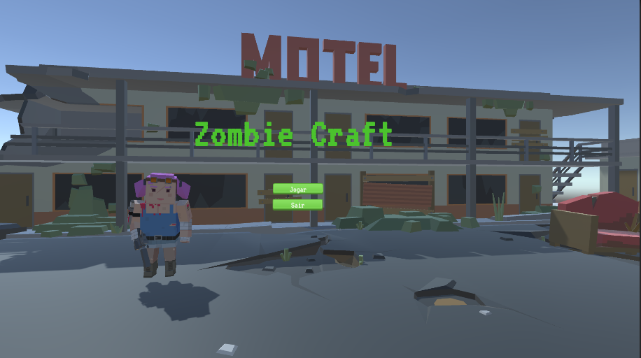

Zombie Craft
Sumário do Projeto e Mecânicas
Game Design Document: Zombie Craft 🧟♀️🎅
Visão Geral do Projeto (Elevator Pitch):
Um survivor-shooter apocalíptico em 3D com estilo gráfico voxel (semelhante ao Minecraft), focado na sobrevivência por tempo em um cenário hostil. O jogador assume o papel de uma Heroína enfrentando hordas de zumbis em um mapa delimitado, culminando em encontros intensos com um Chefe Natalino cíclico. O foco do design está na gestão de recursos (munição e vida), domínio de combate e navegação estratégica em rotas de dificuldade variada.
1. Gênero e Tema
- Gênero Principal: Survival-Shooter (Horde Survival/Time-Based)
- Perspectiva: Terceira Pessoa (Assumindo)
- Estética/Tema: Apocalipse Zumbi com um toque inusitado de "Horror Festivo" (Chefe Noel).
- Plataforma de Desenvolvimento: Unity.
- Estilo de Arte: Low-Poly 3D/Voxel-like (Gráfico semelhante ao Minecraft) - O que confere um charme único e simplifica o pipeline de arte.
2. Core Loop (Loop Principal)
O Core Loop é simples, direto e focado em alta re-jogabilidade:
SOBREVIVER > ELIMINAR HORDAS > GERENCIAR RECURSOS > ENFRENTAR CHEFE > REPETIR/QUEBRAR RECORDES.
3. Mecânicas de Jogo
- Controle e Combate:
- A heroína utiliza uma arma de fogo para eliminar os zumbis. O combate deve ser responsivo e esmagador, com feedback visual e sonoro impactante (por exemplo, marcadores de acerto e animações de morte) . passa, a taxa de spawn e/ou a dificuldade dos zumbis aumenta progressivamente ( Scaling Difficulty ).
- Recursos (Drops): Zumbis normais têm uma chance (RNG) de dropar Kits de Primeiros Socorros (HP) ao serem excluídos. Este elemento de sorte é crucial para o balanço de risco/recompensa.
- Encontro com Chefes:
- O Chefe: O Papai Noel Enorme (Giant Santa Boss)aparece em intervalos de tempo fixos, especificamente como um marco de dificuldade.
- Mecânica do Chefe: Ele possui uma Barra de Vida dedicada e é significativamente mais difícil de derrota. Seu comportamento é previsível: ele nasce no mapa e vai diretamente na direção ao jogador ( Aggro ) , forçando o movimento e a interrupção da rotina de cultivo do jogador.
4. Level Design e Risco/Recompensa
O Level Design foi inteligentemente construído para promover a escolha estratégica e a gestão de risco (como um fork de dificuldade).
- Rotas de Dificuldade ( Pathing Strategy ):
- O mapa obriga o jogador a escolher entre 2 a 3 caminhos distintos .
- Cada caminho deve ter uma dificuldade e/ou recompensa (por exemplo, um caminho mais aberto/fácil de lutar com menos recursos, e um caminho mais estreito/difícil de navegar com spawns ou drops de munição mais frequentes).
- A navegação entre essas rotas é a chave para o sucesso de longo prazo e recorde de tempo.
5. Balanço (Balancing) e Métricas-Chave
O balanço será crucial, visto que o jogo é baseado em tempo.
- Métricas de Sobrevivência (KPIs):
- Dano de Zumbis: Calibrado para que o Kit de Primeiros Socorros seja significativo, mas não onipresente.
- Frequência de Drop de Kit: Uma chance ( porcentagem de RNG ) deve ser ajustada para gerar tensão, mas recompensar a eliminação de grandes hordas (por exemplo, 5-10% de chance).
- Ciclo do Chefe: O tempo entre os spawns do Chefe deve ser longo o suficiente para o jogador se recuperar do combate anterior, mas curto o suficiente para manter a pressão alta.
O projeto é um excelente exemplo de como a simplicidade das mecânicas e a complexidade das escolhas de Level Design se unem para criar uma experiência de Horde Survival viciante. Parabéns pela iniciativa fazer todo o desenvolvimento técnico!


← Voltar ao Portfolio